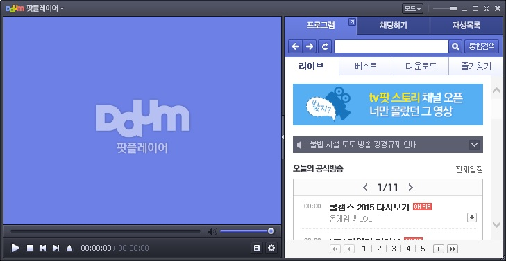

이전 버전인 파워에디션의 경우 메신저를 읽기 위해 사용자 윈도우를 지정하고 화면읽기 방법을 변경해야 대화창의 내용을 읽을 수 있었습니다.
그러나 베이직, 프로페셔널 버전은 대화창을 설정에 관계없이 자동으로 읽어주는 메신저 내용 읽기 기능을 지원합니다.
지원되는 메신저 종류는 윈도우즈 라이브 메신저와 네이트온 메신저(버전 4.01)입니다.
기본적인 대화창 읽기 기능 외에도 이전 대화내용 읽기 기능을 지원하며, 대화명 읽기, 상대방 메세지 입력시 사운드 알림 등의 세부 옵션을 조정할 수 있습니다.
* 현재 최신 버전은 5.0입니다. 이 버전은 키보드 접근성을 고려하지 않은체 개발되어 사용이 불가합니다.
아래의 이용방법은 버전 4.01을 기준으로 작성되었음을 안내드립니다.
대화창이 활성화된 상태에서 <Ctrl> 키와 숫자 1부터 9까지의 기능키를 차례대로 누르면 이전의 대화내용을 하나씩 다시 확인할 수 있습니다.
기본적인 대화내용 읽기 외에 대화명을 빼고 내용만을 읽고 싶거나 상대방 메세지 입력시 사운드 알림 등의 세부 설정을 하기 위해서는 <Ctrl-Shift-F9> 키를 눌러
'메신저 환경 설정' 대화상자를 호출합니다.
대화상자가 출력된 뒤, 각 항목의 이동은 위, 아래 방향키를 사용하며, 설정값을 변경하기 위해서는 <Space> 키를 누릅니다. 설정을 변경한 이후에는
'확인' 버튼을 눌러 설정을 적용해야 합니다.
옵션의 각 항목은 다음과 같습니다.
곰플레이어가 최신버전이 아닌 경우 센스리더를 통한 자막 읽기 기능은 별도의 환경설정을 요구하지 않으나 최신버전인 경우 자막 읽기 기능을 이용하기 위해서는 다음과 같이 설정을 진행해야 합니다.
자막의 음성출력은 SMI 파일 형식이나 자막이 텍스트 형태로 포함된 파일 형식 등이 가능하며, 센스리더의 별도 환경 설정은 필요하지 않습니다. 음성의 속도, 크기, 높이 등은 일반적인 센스리더 환경과 동일하게 적용됩니다.
자막을 듣는 중 자막 내용과 관련이 없는 광고 메시지가 음성출력되는 현상은 곰플레이어 기본스킨의 광고내용이 표시되기 때문입니다. 자막
내용만을 깔끔하게 읽고 싶다면 <PopUp> 키를 눌러 메뉴를 열고 [스킨 선택] -> [가벼운 표준스킨] 항목을 차례대로
실행해 줍니다.
1. 동영상 파일과 자막파일의 파일명이 일치하지 않거나, 자막이 동영상에 이미지형태로 삽입된 경우는 센스리더에서 자막을 읽을 수 없습니다.
2. 간혹 영상을 재생시 소리가 정상적으로 출력되지 않는 경우 통합코덱을 설치하여 이용해 보시기 바랍니다.

최신 버전의 다음 팟 플레이어는 곰 플레이어와 같이 자막 읽기기능을 지원하며 영상과 같은 위치, 같은 파일명을 가진 smi, src의 자막을 지원 합니다.
팟 플레이어를 통해 자막 읽기기능을 이용하고자 하시는 경우 다음과 같이 설정을 하시면 됩니다.
팟 플레이어를 실행하신 후 팝업키를 눌러 환경설정 메뉴로 진입 합니다.
탭키를 한번 눌러 트리뷰 항목으로 이동하고 아래방향키로 접근성 메뉴까지 이동 합니다.
탭키를 이용하여 아래의 체크상자를 모두 선택합니다.
이 때 별도의 'Sapi' 음성앤진이 설치되어 있는 경우 센스리더 음성이 아닌 설치된 'Sapi' 앤진으로도 자막 읽기기능이 지원되니 참고 부탁드립니다.
① 음성 출력 프로그램을 위해 메시지를 윈도우 제목으로 출력 체크상자.
② 음성 출력 프로그램을 위해 자막을 윈도우 제목으로 출력 체크상자.
③ 음성 출력 프로그램을 위해 툴팁을 윈도우 제목으로 출력 체크상자.
위 세개의 체크상자를 모두 선택하셨다면 탭키를 이용하여 확인 버튼을 눌러 설정을 적용합니다.
곰 플레이어와 같이 음성의 속도, 크기, 높이는 센스리더의 기본 설정값이 동일하게 적용됩니다.
센스리더는 사용자들의 여가생활 증진을 위해 가상악기 프로그램인 소나를 지원합니다.
소나 프로그램을 통해 사용자들은 음악을 직접 작곡하거나, 편집할 수 있게 되었으며 설치 후 번거로운 설정과정 없이 이용이 가능 합니다.
또한 탭키, 상, 하, 좌, 우등 단순한 조작으로 프로그램을 사용할 수 있게 제공하므로써 사용성을 극대화 하였습니다.
오토메이션이란 한 응용프로그램이 다른 응용프로그램에서 사용할 수 있도록 자신의 기능을 외부에 제공하는 표준화된 COM 기술의 하나입니다.
오토메이션을 제공하는 대표적 프로그램으로 Microsoft Office를 들 수 있습니다.
센스리더 오토메이션 기능은 이런 오토메이션 기술을 사용해 센스리더의 내부 객체를 외부에 제공하는 기능을 뜻합니다.
따라서 COM을 사용할 수 있는 곳이라면 어디서든 센스리더 객체에 접근할 수 있으며, 현재 센스리더 오토메이션을 통해 음성 제어 기능이 제공됩니다.
센스리더 오토메이션 객체모델의 최상위 객체는 센스리더의 Application객체이며 이 객체를 얻는 작업이 센스리더 객체에 접근하기 위해 제일 먼저 해야 할 작업입니다.
Application객체가 얻어지면 이 객체가 제공하는 메소드인 "Speak", "StopSpeaking" 등을 사용할 수 있으며,
Application객체는 ProgID "SenseReader.Application"을 사용하여 얻을 수 있습니다.
자세한 내용은 샘플자료 확인하기에서 확인하실 수 있습니다.